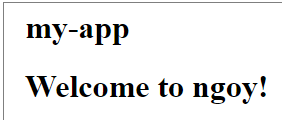
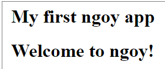
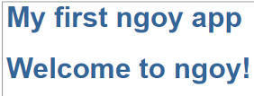

This guide shows you how to build and run a simple ngoy app and how to use the CLI to generate an app from scratch.
Prerequisites
ngoy is a standalone library with no dependencies to any web server/framework. All it needs is an OutputStream to write the contents to.
In this guide we are going to produce HTML. It's best to spin off a web server and view the HTML contents in the browser. We are going to use a Gradle/Spring Boot application for that purpose. So for this part of the guide you must have gradle installed.
The ngoy-starter-web repository is a good place to start.
Let's clone it:
git clone https://github.com/krizzdewizz/ngoy-starter-web
cd ngoy-starter-web
Run the web server:
gradle run
and open http://localhost:8080 in the browser.
You should see the app's greeting:

Make some changes
Open AppComponent.java and change the title field from "my-app" to "My first ngoy app":
@Component(selector = "", templateUrl = "app.component.html", styleUrls = { "app.component.css" })
public class AppComponent {
public final String title = "My first ngoy app";
}
You should see the changed title:

Open app.component.css and give it some style:
h1 {
color: #369;
font-family: Arial, Helvetica, sans-serif;
font-size: 250%;
}
Looking nice:

ngoy has a built in CLI with which you can
Download the ngoy release ZIP from here and extract it to folder on your computer.
You may want to add this folder to the system's path.
The ZIP contains two shell scripts ngoy and ngoy.cmd and the ngoy distribution jar.
$ ./ngoy
usage: ngoy [new|g|gen|generate] [options] template
If 'generate' is given, the rest of the arguments are passed over to
ngoy-gen. 'new' is an alias for 'generate project'.
Options:
-e,--expression treat template as an expression
-f,--file read template from file instead of command
line
-h,--help display this help
-in,--input run template for each line read from stdin
(use $ variable to access line within
template)
-v,--variable <name=value> add a variable to the execution context
--version print version information
The generator's help:
$ ./ngoy new
usage: ngoy-gen [options] project|component|directive|pipe|module|service
name
name should be a fully qualified Java class name.
Examples:
ngoy-gen component org.myapp.PersonList
Shortcuts works as well:
ngoy-gen pi org.myapp.MyPipe
Options:
-h,--help display this help
-t,--target <arg> target folder for the generated artifacts. A default
is searched in the following order: [./src/main/java,
./src, .]
--version print version information
Let's create a new (gradle only) project in the current directory. Add -t to generate it in another one. The directory must be empty.
$ ./ngoy new com.example.MyApp
generating artifact '.\.gitignore'...
generating artifact '.\build.gradle'...
generating artifact '.\ngoy.cmd'...
generating artifact '.\ngoy'...
generating artifact '.\settings.gradle'...
generating artifact '.\src\main\java\com\example\MyAppWebApplication.java'...
generating artifact '.\src\main\java\com\example\app\app.component.css'...
generating artifact '.\src\main\java\com\example\app\app.component.html'...
generating artifact '.\src\main\java\com\example\app\AppComponent.java'...
generating artifact '.\src\main\java\com\example\app\Main.java'...
generating artifact '.\src\main\resources\application.properties'...
generating artifact '.\src\main\resources\messages_en.properties'...
Initializing git...
If you have git installed, a new repository is automatically initialized.
Run the app:
gradle run
and open http://localhost:8080 in the browser.
$ ./ngoy g c com.example.person.Person
generating artifact '.\src\main\java\com\example\person\PersonComponent.java'...
generating artifact '.\src\main\java\com\example\person\person.component.html'...
generating artifact '.\src\main\java\com\example\person\person.component.css'...
A component consists of several files and should be placed in an own package. The Component suffix is added by ngoy.
Open AppComponent.java and add PersonComponent.class to the NgModule's declarations list:
@Component(selector = "", templateUrl = "app.component.html", styleUrls = { "app.component.css" })
@NgModule(declarations = { PersonComponent.class }, providers = {})
public class AppComponent {
...
}
Open app.component.html and add an <app-person> element:
<!DOCTYPE html>
<html>
...
<body>
...
<app-person></app-person>
</body>
</html>
Person works:
Note: the element, resp. the selector of PersonComponent is prefixed with app. It's common practice to have a prefix in order to
avoid collisions with existing HTML elements or components from other libraries.
You can override the prefix. Create a ngoy.properties file and add this property:
app.prefix=myprefix
The generator looks up the properties file in the current directory.
Some examples:
$ ngoy -e "1+1"
2
$ ngoy -v name=world "hello {{name}}"
hello world
$ ngoy "<li *ngFor='let x of {1, 2, 3}.?[intValue() > 1]'>{{x}}</li>"
<li>2</li><li>3</li>
$ ll | ngoy -e -in "$.startsWith('total') ? '' : ($.substring(0, 10) + nl)"
drwxrwxrwx
drwxrwxrwx
-rwxrwxrwx
-rwxrwxrwx
drwxrwxrwx
-rwxrwxrwx
drwxrwxrwx
...
Checkout ngoy's Tour of Heroes tutorial rewrite, the examples collection or visit the documentation.